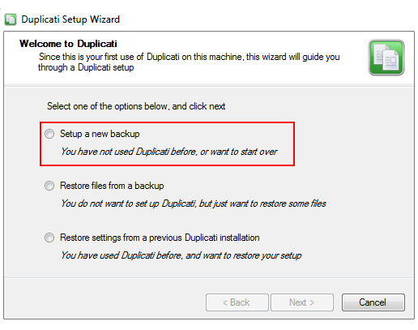
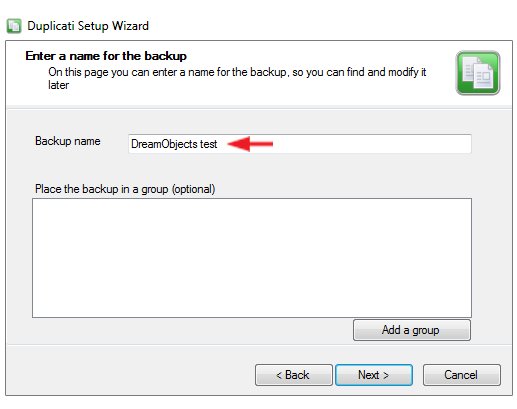
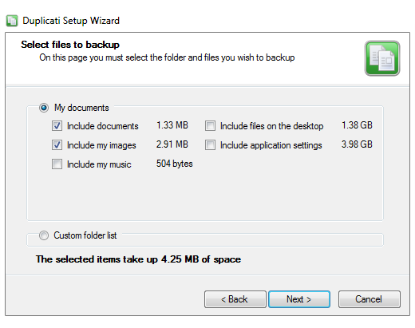
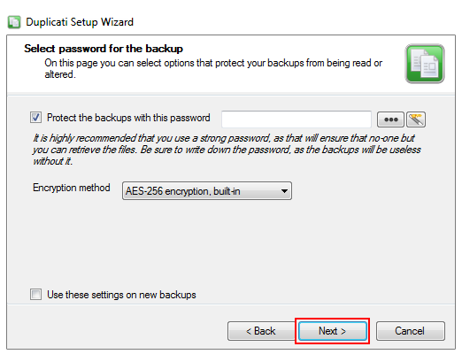
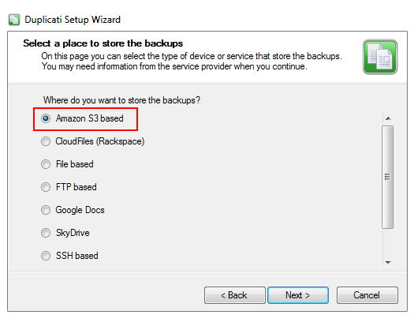
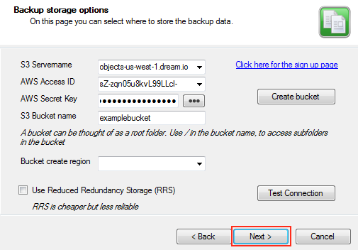
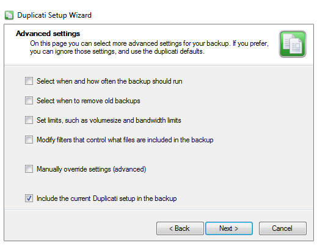
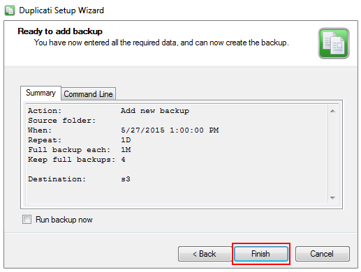

How to Use Duplicati with DreamObjects
Overview
Duplicati is a free backup client that securely stores encrypted, incremental, compressed backups on cloud-storage services and remote-file servers. It works with Linux, Mac, and Windows.
Duplicati has built-in AES-256 encryption and backups can be signed using GNU Privacy Guard. A built-in scheduler ensures that backups are always up-to-date. The Duplicati project was inspired by duplicity, and while similar, they are not compatible.
Setting up Duplicati with DreamObjects
- Launch Duplicati.
The following options appear when first setting up Duplicati:

Select the ‘Setup a new backup’ option.
Enter a backup name, and then click the Next button.
Select which type of files you wish to back up, and then click the Next button.
- Enter the following:
- Protect the backups with this password - This is optional but recommended
- Encryption method – Select AES 256
- Use these settings on new backups - Check this box to enable these settings for future backups
Click the Next button.
Select the ‘Amazon S3 based’ radio button, and then click the Next button.
- Enter the following required DreamObjects credentials:
- S3 Servername – objects-us-west-1.dream.io
- AWS Access ID and Secret Key – Visit the DreamObjects keys article for further details
- S3 Bucket name – The name of your DreamObjects bucket
Click the Next button.
- Select the desired Advanced settings, and then click the Next button.
A summary window appears where you can review details of the backup:
Click the Finish button to save.